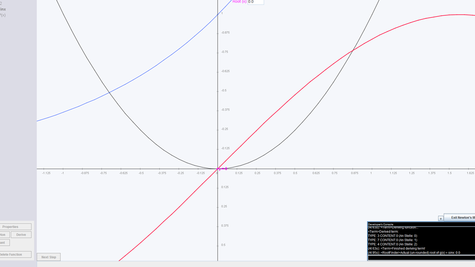
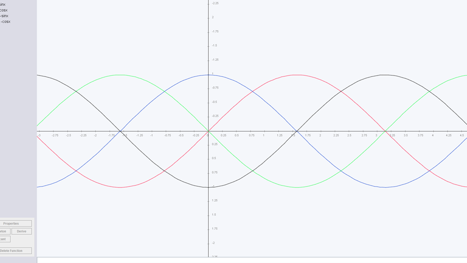
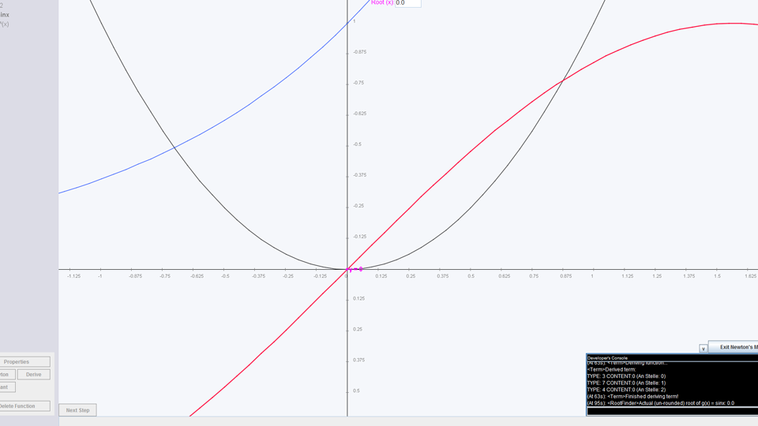
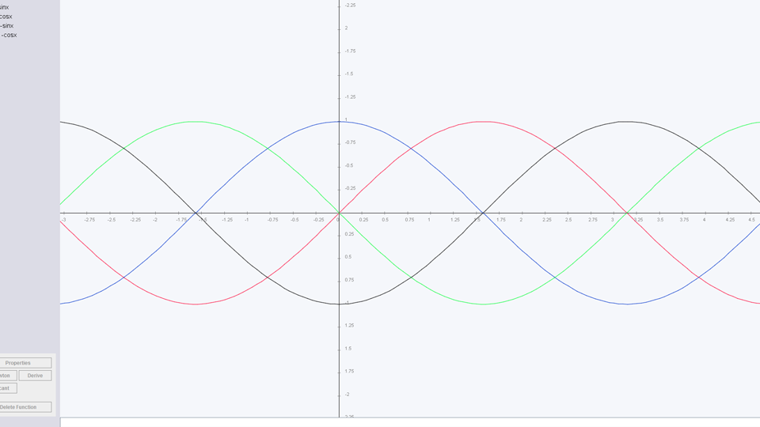

Drawing Math Functions
This java app is able to draw graphs of and derive user-defined mathematical functions. It is one of my earliest projects. I wrote it during my last year in grammar school.

 



Description
The function entered by the user is analyzed by a selfmade algorithm in order for the program to be able to calculate any function-value. Values are then calculated in a specific sample-rate in order to approximate the graph.
Drawn graphs can be selected, transformed and scaled with the mouse.
Furthermore I have added a "Newton" and a "Secant" feature, which visually illustrate the Newton and Secant method for finding roots (or zeroes) of functions. Since Newton's Method uses derived functions I also implemented a "narrow" derive-algorithm which is able to derive simple functions. This algorithm also accounts for the product rule as well as the quotient rule.
The program is able to draw and derive simple functions such as f(x)=x^2 as well as more complex ones such as f(x)=sin(x) or f(x)=e^x.
Time of Development:
Late 2013 - Early 2014